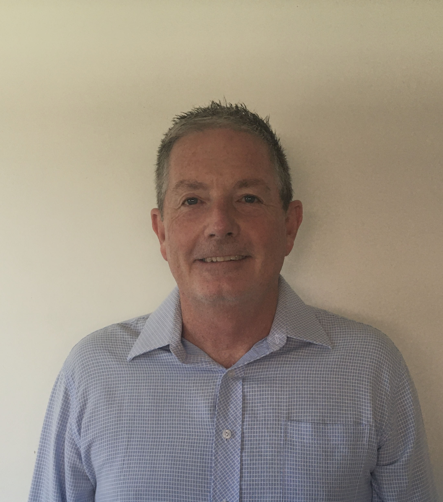

Richard Potter Resume
Summary

An experienced C# programmer currently studying Clojure and full stack web
development.
Education
Bachelor of Electrical and Computer Systems Engineering
Monash University, Clayton, Victoria, Australia
Work Experience
Senior Software Engineer
IR4 Pty. Ltd.
Stapylton Queensland Australia
Oct 2020 - Sept 2022
Trommel screen welding project.
A trommel is
like a giant cylindrical sieve with a spiral inside. IR4 developed a
purpose built turnkey welding system
for welding the spiral and other parts into steel trommels. The trommel
was mounted on its side on rollers, and could be rotated, and a column and
boom moved a robot welder relative to the trommel, first laser scanning to
confirm the geometry, then applying welds between the part and the
trommel. The system was tested on about 6 different models of trommel. It
was designed to work with future models as long as they were within
certain parameters.
Project contributions:
- Contribute to the overall system concept and design and workflow
-
Architect and develop a desktop application that analyses a geometry
file of a trommel and creates all of the instructions for the robots to
fabricate the trommel
- This application could perform the following tasks
-
Import geometry files exported from CAD packages, find the individual
physical parts in the file, convert them to triangular meshes and save
the information in a database
-
Categorise the various imported parts according to the types of parts
expected
-
Spatially transform all parts into a standard orientation expected by
the system
-
Combine sets of parts and find the collision intersection loops
between them where welds would be need to be applied
-
Using different solid models of the system scanner and welder robot
end effectors, find reachable poses for the robot arm, within various
constraints, allowing the robot to reach in and scan and weld the
parts
-
Display the trommel parts in a User Interface (UI) allowing the user
to enable/disable selected parts or selected welds between parts
- Generate the required build instructions for the robots
-
Display an animated 3D representation of the build produced by
stepping through the robot instructions
- Transmit the generated build to the robot system
Project outcomes:
The system was delivered successfuly and cut the manuafacturing time for a
trommel from weeks to less than a day. The knowledge from the project is
expected to help greatly with future IR4 projects.
Senior Software Engineer
SSS Manufaturing Pty. Ltd.
Yatala Queensland Australia
May 2015 - Aug 2021
'SSS' stands for Smart Steel Systems. SSS Manufacturing developed a system
that could import building geometry from a file exported from a CAD
system, and automatically generate the robot instructions required to
fabricate the beams and columns in the building. SSS Manufacturing had a
large dedicated factory to house both a development team and a steel
manufacturing facility. The manufacturing facility consisted of a series
of custom made vice robots on tracks that could manipulate steel beams and
convey them though a manufacturing cell where several other robots would
make cuts with a plasma cutter, place plates in position and weld those
plates to the beam. The system also included a flat plate cutting
component where the required flat plates such as braces and cleats that
were to be welded to the beam could be cut from flat sheets with a robot
plasma cutter.
Project contributions:
- Contribute to the overall system concept and design and workflow
-
Architect and develop a desktop application that analyses a geometry
file of a building and creates all of the instructions for the robots to
fabricate the beams and columns in the building
- This application could perform the following tasks
-
Import geometry files exported from CAD packages, find the individual
physical parts in the file, convert them to triangular meshes and save
the information in a database
-
Find the flat plates such as braces and cleats and calculate plans to
cut them from flat plate, from a nested pattern
-
Combine sets of parts and find the collision intersection loops
between them where welds would be need to be applied
-
Using different solid models of the system scanner and welder robot
end effectors, find reachable poses for the robot arms, within various
constraints, allowing the robots to perform operations while avoiding
collision
-
Create plans for a pick-place robot to scan a plate, pick it up and
place and hold it on the beam
-
Create plans for robot to scan the beam and plate and deform the local
geometry to account for mismatches between the ideal model and the
actual model
-
Create plans for a welder robot to tack and then weld the plate to the
beam while being held by another robot
-
Display the beams in the building in a UI allowing the user to
enable/disable a selected beam
-
Display a selected beam in the building in a UI allowing the user to
enable/disable plates attached to the beam and enable/disable welds
for that plate
-
Display an animated 3D representation of the build for a single beam
by stepping through the robot instructions
- Transmit the generated build to the robot system
Project contributions:
-
With a lot of hard work our team got the system up and running and we
fabricated steel for several years.
- All of the knowledge gained was invaluable in future projects.
Senior Software Engineer
Australian Software Engineering
Ashgrove Queensland Australia
Jan 2010 - May 2015
My primary role at ASE was in developing a data acquisition and reporting
system for coal washing plants. One part of the system was a custom data
acquisition module which was located remote on site and was interfaced to
local Citect SCADA system controlling the washplant. This data acquisition
module would reliably replicate the data collected back to SQL servers in
Brisbane. Another part of the system was a reporting engine which
generated SSRS reports on this data using sophisticated SQL queries. The
final part of the system was a web based application to select a report to
view, enter parameters and view the generated reports.
Skills
- .Net C# and VB programming using async/await task based code
- ASP MVC website design
- Microsoft Silverlight
-
UI design and creation using Windows Presentation Foundation (WPF), with
Model View ViewModel (MVVM) architecture
- 3D animation using Eyeshot controls from devDept software
- Xbim Toolkit for geometry import
-
MSSQL Server, PostgreSQL and MySql database design, querying, stored
procedures, authorization, roles, deployment, integration
- Microsoft Reporting Services
-
Object Relation Mapping (ORM) using Microsoft Entry Framework and
mico-orms such as NPoco
-
Dependency Injection (DI) to isolate different componenets of a complex
system
- Automated Unit Testing
-
Functional Programming (FP) techniques such as immutability and Higher
Order Functions (HOF)
- 3D Computer Aided Design (3D CAD) systems
- Manipulation of 3D triangular meshes
-
Mathematics of 3D modelling such as homogeneous transforms, surfaces,
planes, vectors, quaternions etc.
-
Souce control using Git, Mercurial, SubVersion, Team Foundation Server
with tools such as GitKraken, TortoiseHg and TortoiseSvn and practices
such as trunk based source control development protocol
Other
Hobbies
Contact Details